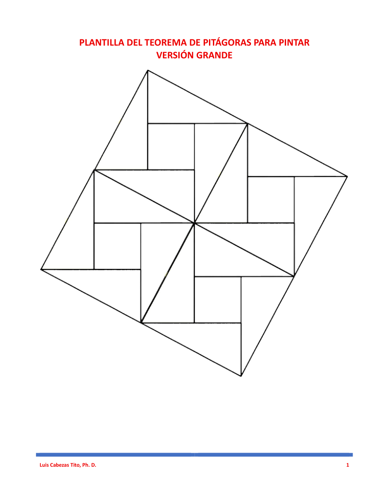

El teorema de Pitágoras para pintar
Dos plantillas listas para imprimir: versión grande y versión pequeña.
Haz clic en la imagen para descargar el PDF.

PDF de 2 páginas · Disponible para imprimir en blanco y negro.
Dos plantillas listas para imprimir: versión grande y versión pequeña.
Haz clic en la imagen para descargar el PDF.

PDF de 2 páginas · Disponible para imprimir en blanco y negro.